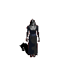
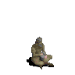
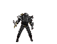

| |
任务介绍
| Tremain, master of randomness |
Tremain 牧师不仅因为其语调语音成为仅有的一个独特人物, 还因为他作为仅有的一位角色给予我们线索, 这些线索涉及被移除或修改任务的随机产生:
作为给予玩家 Fleshdoom 和 Lazarus 任务的角色, 他自身却出现了矛盾. 因为他如何能够提到 Lazarus, 该任务是接近游戏尾声时出现的, 而此时 Tremain 早已亡故. (凯恩的 Fleshdoom 任务相关对白及皮平有关圣人的闲话都证明了 Tremain 的亡故时间)
因此如何解决这个矛盾? 如果这些这些事件无需一起出现在游戏中, 那么就不会出现这种问题?
这里有个观点, 排除了另一暗黑破坏神发售版的不可能性, Lazarus 任务并非总是暗黑破坏神任务线的一部分.
那么最后是否有证据可以证明? 可以证明吗?! 不行! 但有支持它的观点吗? 有, 准确说来有3点:
1) 一些任务不可能在一个游戏中都给予玩家, 这就不够新鲜了.
2) 为游戏加入矛盾因素, 其存在没有必要, 而这不会是开发者会做出的行为.
3) 当你仔细阅读皮平的闲话时, 你会注意到其中有使用“将来某一天”这个词组, 这就暗示了随机角色身上发生的事件(即 Tremain 之死). 因此这也许不会发生在这个游戏中, 在另一版本中就有可能发生. |
| 有关 Tremain 的闲话 |
 |
Wirt:
是的, Tremain. 他经常会来逛逛, 不是么? 或许你不知道, 住在其他镇上的朋友跟我说, 他只是路过而不做停留. 在这里挑上几本书, 在那里抓点蝙蝠爪子. 他从崔斯特瑞姆来去进出看来很从容, 这一点是肯定的. |
 |
Adria:
未知之中信念是绝对的信仰. Tremain 牧师来自于这块陆地上沉眠已经的一支神圣教派. 他遵信一条承诺并肩负很久之前被赋予的职责, 与一些我都无法了解到的领域保持着联合. 他所知甚多, 但他的信仰更为崇高. |
 |
Cain:
Tremain 偶尔到访此处, 而且来去似乎都没问题. 企图离开崔斯特瑞姆的人都会被追杀, 而他却可以轻易来去, 这就是奇怪之处. 而这种不确定性的恐惧就是让我们定居此处的原因. 让我们高兴的是, Tremain 的勇气和好运让我们与王国的其他地区能有一些交流. |
 |
Farnham:
我没见过这里有什么牧师. 如果我能好好地*打嗝*他一下. 这些所谓的圣人连教堂下的地狱饿鬼都对付不了, 他们有什么用处? 都是些骗子, 谎言家! |
 |
Gillian:
有关 Tremain 牧师我确实知道的不多. 他从不来酒馆, 只是跟皮平和凯恩作伴. 也许是因为他们有更多的学术追求吧. |
 |
Griswold:
Tremain 牧师*格里斯瓦尔德发出怪声*. 对我们大多数人来说他几乎都不搭理. 他看起来更喜欢与皮平或是凯恩作伴. 不过对我来说没什么. 我尊重他的热情和对教会的献身精神, 但我可没时间听他瞎白话. |
 |
Ogden:
Tremain 牧师有点神秘, 当然他从不在此长留, 他会经常在附近的镇子来往. |
 |
Pepin:
他的圣贤之处就在于他学识渊博. 他已经教会我很多疑难重症的疗法. 只要有可能他就会给我带来工作上需要的书籍和配方. 但我担心他将来有一天会因为正在从事的任务(摧毁Shadowfang)付出代价 [意指为了完成任务需要付出生命]. |
| 相关任务 |
Shadowfang 的挥舞者 Fleshdoom
触发: Tremain 牧师
要点: 击败 Fleshdoom 并在地狱熔炉上摧毁魔刃 Shadowfang
奖励: 未知
额外信息:
该任务包含两个部分:
- 追猎 Fleshdoom, 它是一个恶魔, 在13层或14层(地狱)可以遇到她;
- (在地狱熔炉[你也许会碰上守卫或是陷阱])摧毁魔刃 Shadowfang, 这柄魔刃的持有者是 Fleshdoom, 同样也是从它身上掉落的.
如果没有将其放入背包的话则会触发 Tremain 的第二个对话, 或是没有将其带给教堂代理(可见如果你没有触发 Tremain 的第二个对话就无法带上魔刃).
另外. 这柄恶魔武器会让胆敢装备它的英雄堕落(尽管 Tremain 对我们这样说, 但并不意味着无法装备它).
最后, Tremain 没能“结束其黑暗的邪恶”, 失败并被魔刃吞噬/杀死, 这柄剑也回到了英雄手中.
[地狱熔炉应该位于14层或15层, 因此为玩家带来更多挑战] . |
|
Tremain:
我得跟你讲讲最令我困扰的一次经历, 我的朋友. 那天早些时候, 我接到命令帮助那些从迷宫中逃出的人们中的一名. 他精神错乱, 狂暴不已, 并且对任何试图让其冷静的人大打出手. 我怀疑他是被某种邪恶的存在所占据了, 因此就开始帮助他驱邪. 过了很久, 我终于驱逐出了一只自称为 Fleshdoom 的恶魔, 但被它逃脱回了迷宫中. 你也许会认为我疯了, 但当我跟那个人谈过并与 Fleshdoom 交战后我终于明白了, 这个迷宫其实就是地下世界的入口. 当你渐渐深入其中时, 你就会发现最终来到了地狱的门槛前. (我们从此处可以理解到, 玩家现在是不可能进入地狱关卡中的, 因此该任务需要被触发, 你会在12层时碰上它们). 最终, 这名被驱邪的人恢复了记忆, 他提到了一柄被叫做 Shadowfang 的远古魔刃. 如果你找到了 Fleshdoom, 那么请小心这把邪剑. 现在我担心来自下面的威胁更加深重了, 你必须找到 Fleshdoom 并杀死它. 把那把剑带给我, 我能摧毁它, 但千万不要使用它, 其堕落腐蚀之力是非常强大的.
Fleshdoom 的死对整个世界来说都是件大功劳, 但是魔刃还在! 必须找到并摧毁它! 千万不要尝试使用它, 英雄. 它会腐蚀并逼疯所有挥舞它的凡人. 只有我才能结束它的黑暗邪恶之力.
赞美圣光! 你终于找到这柄被诅咒的魔刃了! 只有摧毁它才能还我们安全! 等等, 这是什么? 喔, 它在燃烧! 地狱火….它正在吞噬我! 你必须把它带到地狱熔炉, 在它*啊!* (惨叫) 不!!!!!!! (声音渐消) |
|
Wirt:
我不知道这个 Fleshdoom 是什么, 但我听说一柄黑暗魔刃会从体内夺取灵魂. 就算是我也不会卖那种东西的, 无论其价值有多高. 如果你找到这把武器, 就应该按照 Tremain 说的, 尽快销毁它. |
|
Adria:
你必须时刻警惕, Fleshdoom 是一个劲敌, 它不但残暴而且敏锐. 他的黑暗刀锋是由邪恶精华所铸. 如果你能消灭它和它的剑, 那么肯定能削弱它的黑暗主子. |
|
Cain:
Tremain 牧师是古代圣教的一名圣人. 他们与邪恶势力作战的丰功伟绩早已满载史册. 我也知道有关一柄被诅咒魔刃的传说, 这柄魔刃被称为影牙. 据说它会吞噬并折磨使用者的灵魂. 这些灵魂被禁锢在黑暗之刃中, 并增强其邪恶之力. 我还从书中了解到存在一个地狱熔炉, 在那里就算是最强大的武器也能被摧毁. 在对付影牙及其主人的时候请多加小心, 别让它吞噬了自己. |
|
Farnham:
你要追猎恶魔, 你说你要追猎恶魔? 我知道我是没听过, 因为没人会去追猎恶魔. 不, 绝没人做那种事! |
|
Gillian:
我听说 Tremain 牧师准备进行驱邪仪式, 但我可不会去. 我不认为我们得时刻被镇子地下的那些东西所束缚. 我知道很多人都丧命于这些怪物之手, 但我们还是得继续生活. 我也知道你来此是为了从黑暗魔爪中解放崔斯特瑞姆的, 我也希望我们能重新过上安宁的日子. |
|
Griswold:
啊, 你提到了一把远古的邪恶武器. 在那里你得小心才是, 有关影牙的传说可以非常黑暗的, 堪比没有月光的冬夜. 从地狱熔炉之中诞生的影牙可以磨灭任何被击中的灵魂. *格里斯瓦尔德发出怪声*如果你下定决心要除掉它的主人, 那么我一点也不羡慕. 愿圣光护佑着你, 勇士. |
|
Ogden:
我去过驱邪仪式了, 真是神奇, Tremain 居然能把邪灵从那具被折磨扭曲的人中驱逐出了. 我祈祷不会再有这种可怕的事情发生在这里的任何人身上. |
|
Pepin:
我被要求协助这次驱邪仪式. 在 Tremain 驱除恶魔的同时, 我能够帮助舒缓不幸者的痛苦. 在我治疗他的高热时, 他提到一处灼热炽人的地方. 这个被折磨的人呼喊到地狱, 以及落入火焰深渊的情景. 我不能了解其中的意思, 可喜的是, 这个不幸的家伙最终康复了. |
 |
Player Character:
-)我终于知道为何他们如此惧怕这把武器了. (Shadowfang)
-)这把魔刃必须被摧毁.(Shadowfang) |
|
|